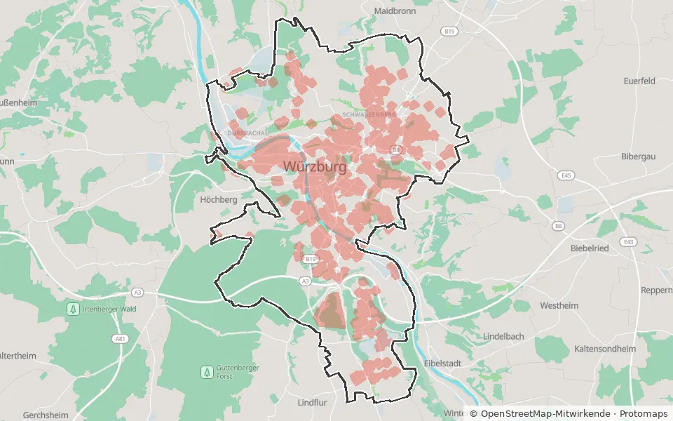
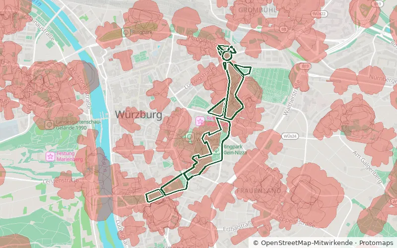
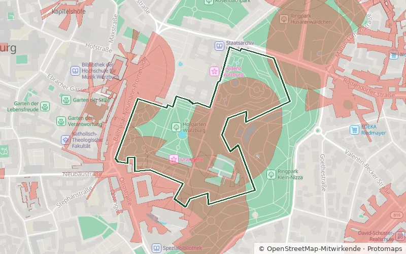
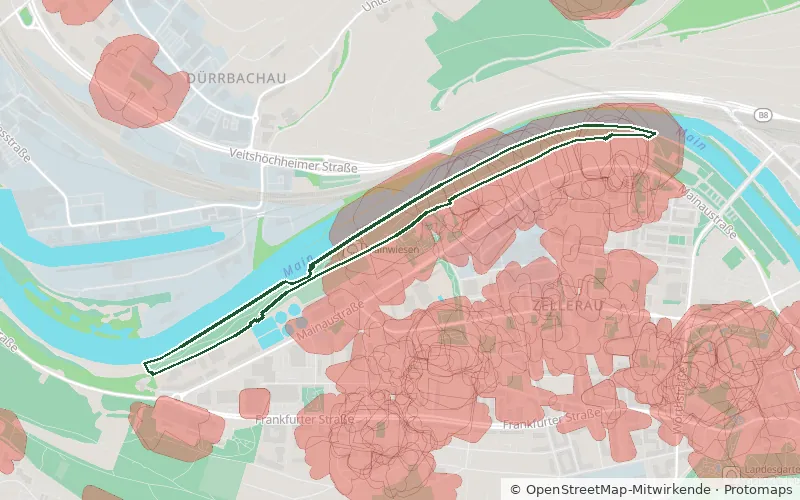
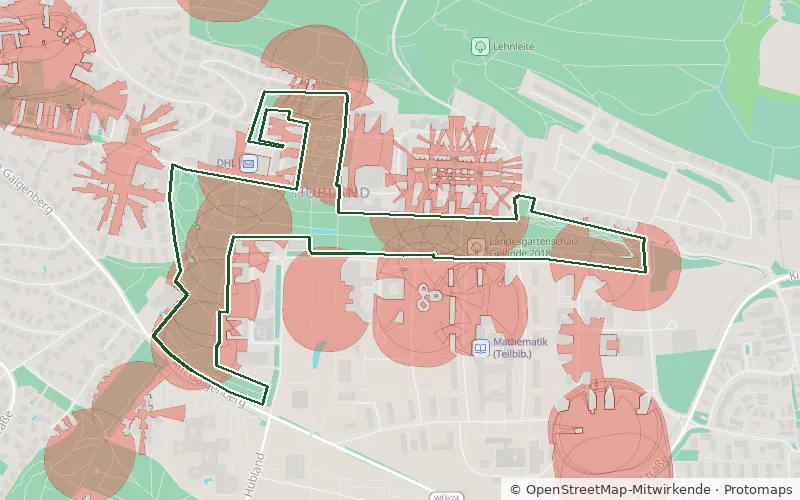
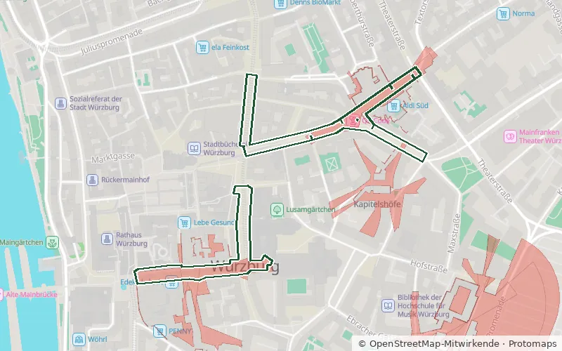
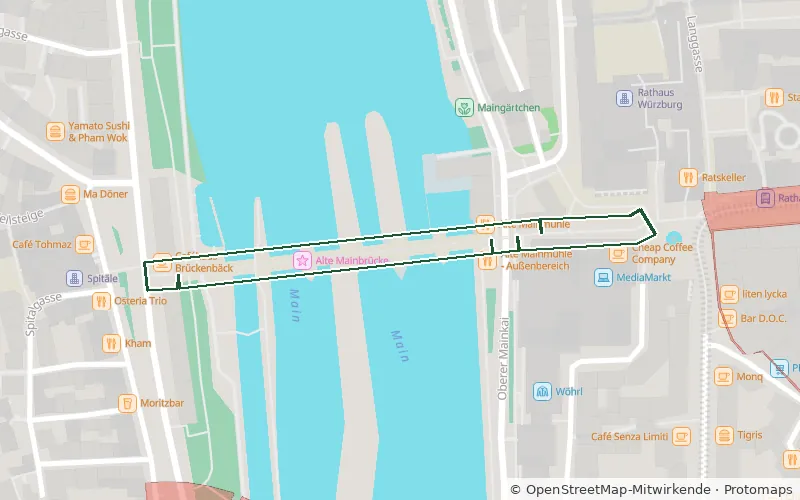

In Würzburg ist öffentliches Kiffen auf 12 km² verboten, das sind 14,3 % der Stadtfläche von 88 km². Grund sind 687 Einrichtungen wie Schulen und Spielplätze: In ihrer Sichtweite, bis 100 Meter vom Eingang und ohne Gebäude dazwischen, verbietet § 5 KCanG den Konsum. Dazu kommen die Fußgängerzonen von 7 bis 20 Uhr und überall die Gegenwart von Minderjährigen.
In Bayern ist gerauchtes Cannabis außerdem in Biergärten, auf Volksfesten wie dem Kiliani und auf dem Gelände von Spielplätzen, Schulen und Kitas verboten (siehe Landesrecht in Bayern). Ohne die Wälder am Stadtrand gerechnet liegen 16,1 % der Stadt in einer Zone.

Woher die Zonen in Würzburg kommen
| Einrichtung | Anzahl | Zonenfläche |
|---|---|---|
| Schulen | 68 | 2,2 km² |
| Kitas und Kindergärten | 51 | 1,3 km² |
| Kindertagespflege | 1 | unter 0,1 km² |
| Spielplätze | 200 | 4,3 km² |
| Kinder- und Jugendeinrichtungen | 17 | 0,3 km² |
| Sportstätten | 350 | 7,3 km² |
Jede Art für sich gezählt, Überlappungen also mehrfach. Anbauvereinigungen nur, soweit in OpenStreetMap eingetragen.
Die meisten Zonen gehen auf die 350 Sportstätten zurück, danach auf die 200 Spielplätze. Die städtischen Spielplätze sind nur für Kinder und Jugendliche bis 18 Jahre da, zu festen Zeiten und ohne Alkohol (Grünanlagensatzung).
Ringpark, Hofgarten und Mainwiesen
Im Ringpark um die Altstadt liegen 69 % der Fläche in einer Zone: Vier Spielplätze liegen im Park, viele Schulen und Sportanlagen an seinem Rand.

Im Hofgarten der Residenz sind es 65 %, wegen der Spielplätze und Jugendeinrichtungen ringsum. Die Anlagenvorschriften der Schlösserverwaltung verbieten dort weder Rauchen noch Cannabis; der Rasen ist tabu, und nach Einbruch der Dunkelheit ist der Garten zu (Anlagenvorschriften).

Auf den Mainwiesen liegen 65 % in einer Zone, um den Spielplatz und den Skatepark; auf einem 100 Meter breiten Streifen Land entlang des Mains sind es 22 %. Auf dem früheren Landesgartenschaugelände am Hubland liegen sieben Spielplätze und vier Sportanlagen, entsprechend 73 %. Im Ringpark sind es je nach Abschnitt unterschiedlich viele: am Rennweger Glacis 90 %, in Klein-Nizza 55 %; an der Lehnleite 15 %.


Altstadt und Alte Mainbrücke
Die Fußgängerzone der Innenstadt hat die Stadt in einer Satzung mit Lageplan abgegrenzt: 43 Straßen und Plätze, darunter Domstraße, Schönbornstraße, Kürschnerhof, Eichhornstraße, Spiegelstraße, Marktplatz, Kaiserstraße und die Alte Mainbrücke; Sanderstraße, Augustinerstraße, Mainkai und Residenzplatz gehören nicht dazu. Eine zweite liegt am Place de Caen im Heuchelhof (Satzung, Lageplan). Dort gilt von 7 bis 20 Uhr Konsumverbot; blau sind die Fußgängerbereiche aus OpenStreetMap.
Von Domstraße, Schönbornstraße, Kürschnerhof, Eichhorn- und Spiegelstraße liegen außerdem 49 % in einer Sichtweiten-Zone. Marktplatz (0 %) und Alte Mainbrücke (0 %) liegen außerhalb der Zonen: Auf der Brücke zählt nur die Fußgängerzone.


Hochschulen und Feste
Hochschulen sind nach § 5 KCanG keine Verbotsorte. Auf dem Gelände der Universität, vor allem am Hubland, liegen 28 % in einer Zone, um 17 Sportanlagen und zwei Kitas. Die Universität erlaubt das Rauchen nur in Raucherzonen (Hausordnung); die Hochschule für Musik verbietet Cannabis ausdrücklich (Hausordnung HfM).
Das Kiliani auf der Talavera ist ein Volksfest: Gerauchtes Cannabis ist dort nach Landesrecht verboten. Beim Umsonst & Draußen hat der Veranstalter Cannabis 2026 von der Liste verbotener Gegenstände genommen (Würzburgerleben, Juni 2026); Kinder sind dort trotzdem überall.
Was sonst noch in Würzburg gilt
Bayern hat feste Bußgelder: Konsum in einer Verbotszone nach § 5 KCanG, auch in der Fußgängerzone, kostet 500 Euro, in Gegenwart von Kindern und Jugendlichen 1.000 Euro (Bußgeldkatalog Bayern). Das Gesundheitsschutzgesetz verbietet, Cannabis zu rauchen, zu erhitzen oder zu verdampfen: in Biergärten, auf Volksfesten und auf dem Gelände von Spielplätzen, Schulen und Kitas, bis zu 1.500 Euro (Gesundheitsschutzgesetz). Eigene Verbotszonen für Cannabis hat Würzburg nicht (Stand 27. November 2026).
Häufige Fragen zu Würzburg
Wo darf man in Würzburg kiffen?
Nach § 5 KCanG außerhalb der roten Flächen, etwa im Guttenberger Forst (0 % in einer Zone). Tagsüber nicht in der Fußgängerzone der Innenstadt, nie in Gegenwart von Minderjährigen, gerauchtes Cannabis außerdem nicht in Biergärten und auf Volksfesten. Weiß heißt nicht sicher erlaubt: Hecken, Bäume und fehlende Einrichtungen kennt die Karte nicht.
Darf man auf der Alten Mainbrücke kiffen?
Tagsüber nicht: Die Brücke gehört zur Fußgängerzone, dort ist Konsum von 7 bis 20 Uhr verboten. Eine Sichtweiten-Zone liegt nicht auf ihr; abends verbietet es § 5 KCanG also nicht, solange keine Minderjährigen dabei sind.
Wie genau ist das?
Täglich aus OpenStreetMap gerechnet, mit Gebäuden als Sichthindernis; die Zahlen hier sind vom 27. November 2026. Eine Orientierungshilfe, keine Rechtsauskunft (wie gerechnet wird).
Fehlt eine Einrichtung? Korrekturen in OpenStreetMap stehen am Tag darauf auf der Karte; bitte nur eintragen, was es vor Ort gibt.